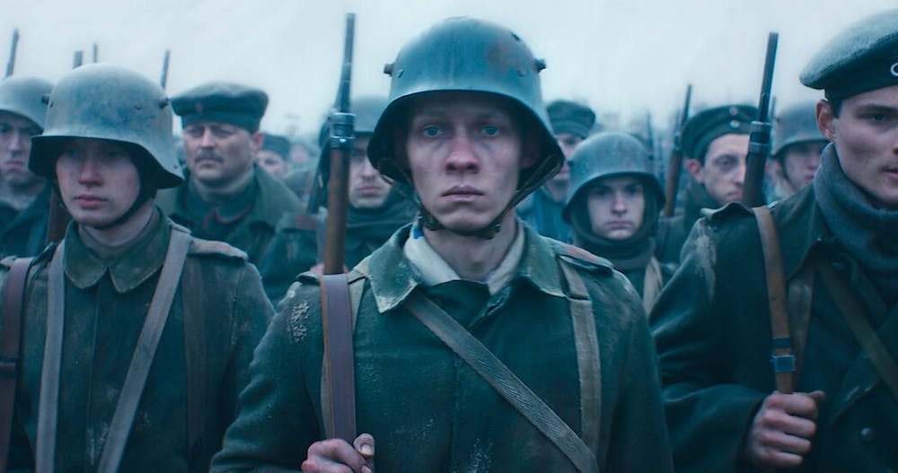
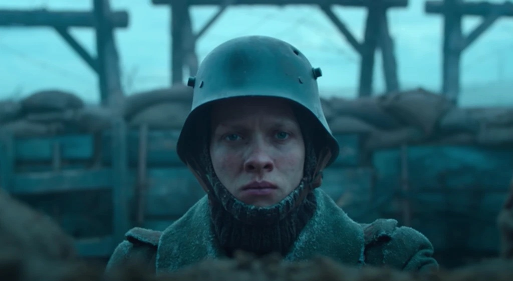
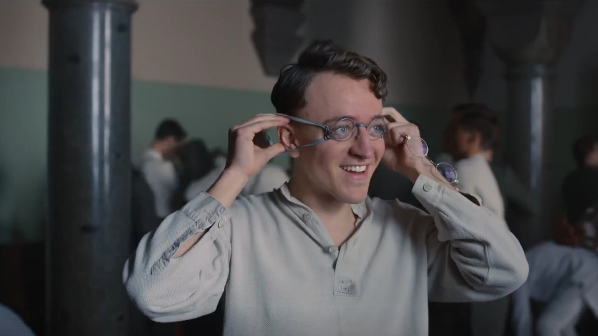
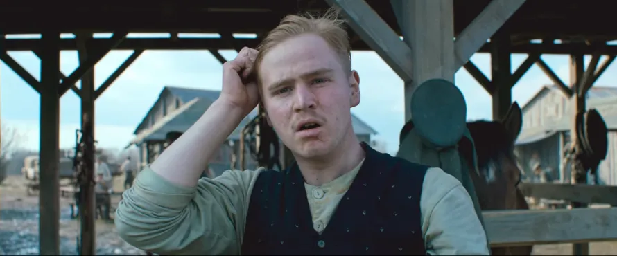
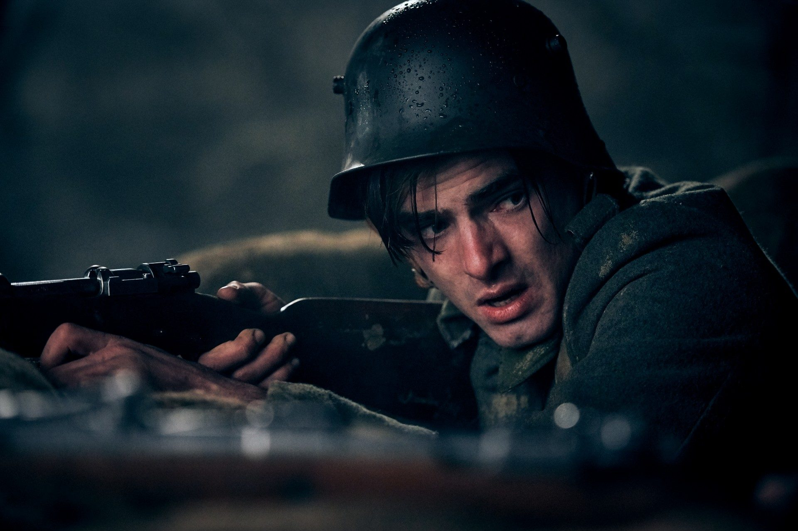
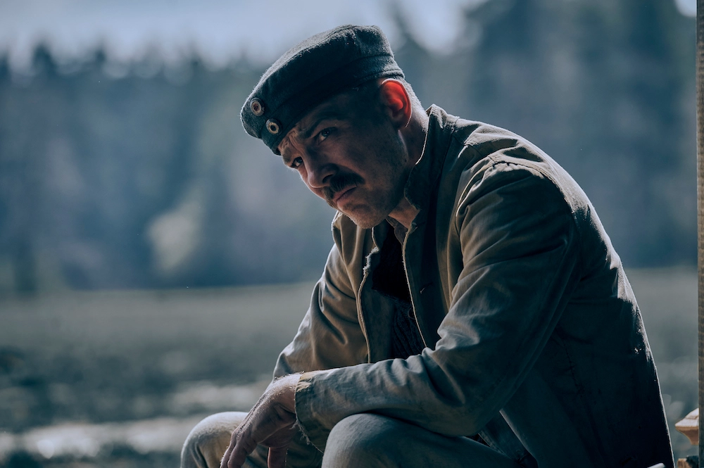
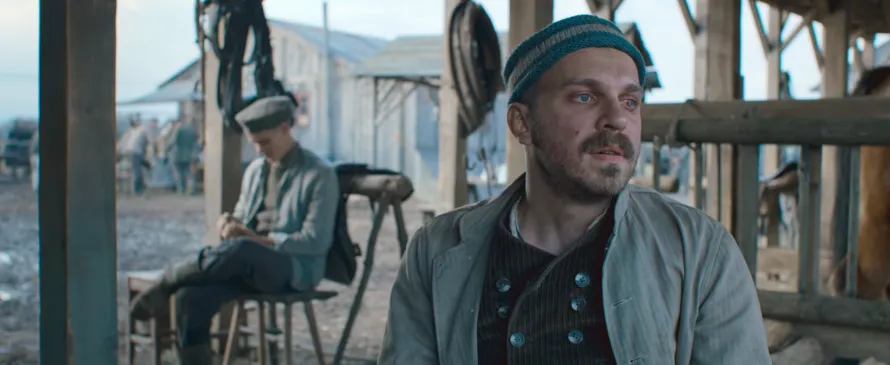

It is the final years of World War 1. Germany is losing, and is now recruiting young schoolboys to make up the numbers lost in the war. A group of young students, seemingly enjoyous of being in war, now find themselves suffering in the desolate hellscape of the trenches in World War 1.

Paul Bäumer
Born in Hanover, Germany. Paul is a young student who was indoctrinated with German nationalism that ended up with him enlisting in the German Army in 1917. He is in a group of 4 friends who joined, after they gratuated. Paul would be killed during the Battle of Eguisac due to a desperate last ditch attempt to attack enemy positions by his commanding officer to win a victory against the enemy in the final 15 minutes of the war. He was the last one from his friend circle to die during World War 1

Ludwig Behm
Ludwig was Paul's best friend, he, Paul and the other 2 enlisted in the German Army after graduating, but unlike his friends. Ludwig was hesitant about joining the Army, but was peer pressured to joining anyways. Ludwig would be killed in the first night of him and his friends joining the war when he died from an artillery barrage.

Franz Muller
Franz was part of the friend circle, that Ludwig and Paul were in. He, like Paul, was enthusiastic about joining the war. Not because of glory, but because he wanted a girlfriend, and that becoming a soldier was going to give him a higher chance of getting one. He would be killed during a charge in the Battle of Champagne.

Albert Kropp
Albert was another friend of Paul, Ludwig and Franz, and also enlisted with them after they graduated. Albert was enthusiastic about joining, because of glory, but now seeing the destruction and death of the war. He now just wants a partner who he can love. But sadly, he was also killed with Franz during the Battle of Champagne.

Albrecht "Kat" Katczinsky
Albrecht was the stone-cold, coolheaded leader of the unit where Paul, Ludwig, Franz and Albert is in. He actually joined their friend circle late during the war but was still a good friend. He is considered their leader because he's calm during all kinds of situations and he is very good at giving orders too. He would be shot by a Farmer's child when Albrecht was scavenging for food. He would later die from the wounds he sustained when he got shot.

Tjaden Stackfleet
Tjaden is the last one to join the friend circle. He is a happy-go-lucky soldier with an enormous appetite andkm with a grand ambition of becoming a policeman after the war. During the charge in Champagne, Tjaden would lose his leg but would still survive. He died from committing suicide, because he didn't want to be a cripple with no chance of becoming a policeman after the war.